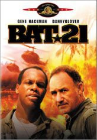

#3313 BAT21 - Mitten im Feuer
Alternativ: Bat*21
 
 IMDB-Wertung: 6.4 / 10
IMDB-Wertung: 6.4 / 10  Metascore: 0
Metascore: 0 
Lt. Col. Iceal "Ham" Hambleton is a weapons countermeasures expert and when his aircraft is shot over enemy territory the Air Force very much wants to get him back. Hambleton knows the area he's in is going to be carpet-bombed but a temporary shortage of helicopters causes a delay. Working with an Air Force reconnaissance pilot, Capt. Bartholomew Clark, he maps out an escape route based on golf courses he has played. Along the way however, he has to face enemy forces and the death of some of his fellow soldiers.
Jahr: 1988
Dauer: 100 Minuten
FSK: 16
Land: USA Studio: TriStar PicturesTonspuren:
Untertitel:
Auflösung: 720p (1280x696) Größe: 4239 MB
Genre: Drama, Krieg
Regisseur: Peter Markle
Drehbuch: William C. Anderson, William C. Anderson, George Gordon
Soundtrack: Christopher Young
Darsteller:
 Gene Hackman als Lt. Colonel Iceal Hambleton
Gene Hackman als Lt. Colonel Iceal Hambleton Danny Glover als Captain Bartholomew Clark
Danny Glover als Captain Bartholomew Clark Jerry Reed als Colonel George Walker
Jerry Reed als Colonel George Walker David Marshall Grant als Ross Carver
David Marshall Grant als Ross Carver- Clayton Rohner als Sgt. Harley Rumbaugh
 Erich Anderson als Major Jake Scott
Erich Anderson als Major Jake Scott- Joe Dorsey als Colonel Douglass
- Michael Ng als Vietnamese Man
- Theodore Chan Woei-Shyong als Boy on Bridge
- Don Ruffin als Helicopter Crew
- Scott Howell als Helicopter Crew
- Michael Raden als Helicopter Crew
- Timothy Fitzgerald als EB-66 Officer
- Stuart B. Hagen als EB-66 Officer
- Jeffrey Baxter als Helicopter Gunner
- Alan King als Helicopter Gunner
- Bonny Yong als NVC / VC Officer
- Willie Lai als NVA / VC Officer
- Martin Yong als NVA / VC Officer
- Jim Aman als NVA / VC Officer
- Freddie Chin als NVA / VC Officer
- Dennis Chong als NVA / VC Officer
- Liow Hui Chun als NVA / VC Officer
- Fung Yun Khiong als NVA / VC Officer
- Henry Lee als NVA / VC Officer
- Ming-yang Li als NVA / VC Officer
- Jeffrey Liew als NVA / VC Officer
- Fredolin Leong als NVA / VC Officer
- Benedict Lojingkau als NVA / VC Officer
- Walter Lojingkau als NVA / VC Officer
- Johnny Michael als NVA / VC Officer
- Clarence Mojikon als NVA / VC Officer
- Wilod Nuin als NVA / VC Officer
- Harold Sinpang als NVA / VC Officer
- Paul Yong als NVA / VC Officer
- Conidon Wong als NVA / VC Officer
- Craig Huston als Reporter , uncredited
- Robert 'Bobby Z' Zajonc als Army pilot , uncredited
Datei: X:\1988\BAT21 - Mitten im Feuer (1988, FSK16, 1280x696).mkv seit 11.03.2016
Festplatte: HD 1987-1991
 Es gibt insgesamt 66 Filme in der Gruppe '1988'
Es gibt insgesamt 66 Filme in der Gruppe '1988'